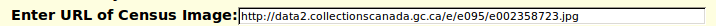

1921 Census: Transcription Help
This form permits you to transcribe a page of the 1921 Census of Canada.
- View every field in the transcription of a page of the
1921 Census of Canada even if you are just visiting the site.
- Transcribe a page of the 1921 Census of Canada.
- Proofread a page of the transcription.
- Contribute field level notes.
If you are not signed on with authorization to update the census database
then the information on this page is read-only.
Header Information
The complete identification of the page is displayed centered at the top
of the form. This is in the form:
dist 99 Districtname, subdist 99 Subdistrict name or desc, page 9
At the left margin, except if you are on the first page of
a census division, there is an arrow pointing left. Clicking
on this arrow takes you to the preceding page in the division.
At the right margin,
except if you are on the last page of a census division, there is an
arrow pointing right. Clicking on this arrow takes you to the next page
in the division.
The next line identifies the transcriber of this page. If the page has
not yet been transcribed your user name is inserted here, however you
will only become the transcriber for the page if you update the page.
If the page has been transcribed, and someone has volunteered to
proofread the page, then the next line identifies the proofreader.
The next line of the form normally contains a
Display Original Census Imag
button.
When you click on this button the browser window is split into two halves,
and the original census image on a free portion of the
Ancestry.ca web site
is displayed in the right-hand half of the window.
The keyboard shortcut for this button is Alt-I.
If you are signed on and authorized to update the database
this is followed by a
Correct Image URL button.
Click on this button
to request the option to correct the Image URL if the
existing URL recorded for this page is incorrect. In some cases the
photographer making the microfilm copy of the images took extra frames
perhaps because of a problem with the first image.
The keyboard shortcut for this button is Alt-C.
If the database does not contain the
image URL for this page, or if you have requested the option to correct the
image URL, then this line of the form has an input field for providing
the image URL. For example:

If you are signed on and authorized to update the database
this is followed by a
Match Family Tree Citations
button. Click on this button
to request a search of the family tree database for individuals that have
citations to this page. These individuals are compared by name, gender, and
age to the individuals on this page, and if there is a good enough match
a linkage is established from the corresponding row of the census to the
family tree.
Body of the Page
The bulk of the web page consists of a fill-in-the-blanks form which
is organized to model the layout of the original image, even to bold
horizontal
lines after each 5th row of the form. This form contains a text input field
for each field in the original form. Most fields have some auto-completion
features so you do not have to type the complete value, just start an
abbreviation and when you tab out of the field it will be completed. For
additional details on how to fill in any field hold the mouse over the
field.
The body of the form functions like a spreadsheet, particularly with
respect to special key strokes.
- The forward and backward tab keys, and the left and right arrow keys,
change the selected input field in the table
to the left or the right. Motion wraps around at the left and right
edges of the table.
- The up and down arrows change the selected input field in the table
up or down one row at a time.
Motion wraps around at the bottom and top of the table.
- The "Home" key repositions the text cursor at the beginning of the
current input field. The "End" key repositions the text cursor
after the last character in the current input field.
- The "Ctl-Home" key combination selects the first input field in the row.
The "Ctl-End" key combination selects the last input field in the row.
- The "Ctl-Z" key combination discards whatever you have typed in the
current input field, and restores the value to what it was when the
page was first displayed.
- The "Enter" key changes the selected cell in the table down
one row at a time, rather than submitting the form as happens on
simpler forms.
The columns of this form represent:
- The line number on the original form, from 1 to 50. Note that there
is an Add a Row button
at the very bottom of the form to add an extra line if the
enumerator squeezed one in.
- The family number. Note that the value you enter is replicated into
subsequent rows, so you only need to enter this on the first line of
a family.
- The surname field is used to specify the surname of each individual.
This value is replicated into subsequent rows, so you only need to
enter this on the head of household.
A left square bracket, "[", entered in this field is expanded to
"[Blank]" and all of the other fields in this row are set to empty.
Do this where the enumerator left a blank line in the middle of
a page.
Entering "[d" in this field is expanded to
"[Delete]" and all of the other fields in this row and all subsequent
rows are set to empty. This is done where the original page has
fewer than the standard number of entries, in particular on the last
page of an enumeration division.
- Given names.
- Parish or township identification. Since generally an enumeration
sub-district only covers a portion of a single parish or township
it is difficult to understand why an entire column was dedicated
to this repetitive information.
- Municipality. Sometimes this is used by the enumerator to record
address information, but sometimes it just contains a repetition of
the information from the preceding column. For the purposes of
this application, if an actual address is present in either of
these two columns, enter it in this column.
- Owner or Renter indication. This is a single character, usually
either "O" or "R".
- If a renter the amount of rent.
- Class. This is usually 'S' for single-family dwelling.
- Building materials: what the house is built from.
- Number of rooms occupied by the household.
- Relation to head of household.
- Sex. Specify M or F.
- Marital Status.
- Age. Note that the enumeration took place in late spring, when the
muddy roads had dried enough that the enumerator could get around in a
carriage. So generally for January through early May the age
and birth year add up to 1921, but for late May to December birth dates
they add up to 1920.
- Birth Place.
- Father's Birth Place.
- Mother's Birth Place.
- Year of Immigration, if not born in Canada.
- Year of Naturalization, if not born in the British Empire.
- Nationality. British subjects and naturalized immigrants from
outside the Empire, are
represented as "Canadian" in this list, so only recent immigrants from
outside the British Empire have any other value.
- Ethnic Origin. As remained true for a century this was required to
represent the origin of your ancestors. So responses of "Canadian" or
"American" were not acceptable and were "corrected" by the
clerks at the Dominion Bureau of Statistics.
- The individual could speak English.
Any non-blank character other than 'N' is interpreted as true.
- The individual could speak French.
Any non-blank character other than 'N' is interpreted as true.
- If the individual could speak some other language other than English or
French then it is specified. If the enumerator did not follow
the instructions and did enter 'English', 'French', 'Anglais', or
'Français' into this column leave the field blank.
- Religion.
- Whether the individual could read.
Any non-blank character other than 'N' is interpreted as true.
- Whether the individual could write.
Any non-blank character other than 'N' is interpreted as true.
- Chief Occupation
- Type of employment. In English the initial letter 'E' is ambiguous
between "Employer" and "Employee" so 'R' was supposed to be entered
for "Employer". Some enumerators clearly couldn't read.
- Place of employment.
- Income from employment.
- An indicator if the individual was unemployed during the week
preceding enumeration.
- Number of weeks unemployed during the preceding year.
- Number of weeks unemployed due to illness during the preceding year.
- The census form did not provide a field for the enumerator to make
comments, but some forms may have notes in the margin. Notes by the
transcriber should be enclosed in square brackets to indicate that
they are not present in the original form.
- Family Tree (FT) linkage column. If this is a
Show button then a linkage to the family
tree has been entered into the database. Clicking on the
Show button opens a new window with
the information about the individual as recorded in the family tree.
If this is a
Find button then clicking on the
button performs a search of the family tree for individuals who
have names and birth years which indicate they may be
the individual enumerated on this line. A dialog is displayed
with a list of potential matches to choose from.
Because of the number of columns in this form you may not be able
to see all of the columns at the same time. Since not all of the columns
may be important to you, you can hide any column by using the mouse
to click on the column header cell. This shrinks the column to a
minimum width. If you click on the now very narrow column header
cell again the column is restored.
Footer Information
There are three buttons at the bottom of the form:
- Update Database.
Clicking on this button applies the changes to the database.
Note that the 'U' in the name is underlined as a reminder that
the keyboard shortcut alt-U can be used to submit the update,
saving the need to scroll the page down to see this button.
For compatibility with spread-sheet programs you may also use
ctrl-S to submit the update.
- Reset to Defaults.
Clicking on this button resets all of the fields
in the form to their default values. For most fields this is blank.
- Add a Row.
If the enumerator squeezed an extra line in at the bottom
of the form, sometimes to avoid splitting a family across a page
boundary, clicking on this button adds an extra input line to the
form.
The complete identification of the page is repeated centered at the bottom
of the form.
At the left margin, except if you are on the first page of
a census division, there is an arrow pointing left. Clicking
on this arrow takes you to the preceding page in the division.
At the right margin,
except if you are on the last page of a census division, there is an
arrow pointing right. Clicking on this arrow takes you to the next page
in the division.